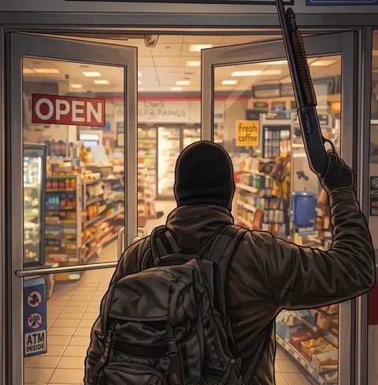

Polizist werden in ROB RUN
Betritt Looty Bay als Zivilist, geh ins Polizeirevier und wähl am Schalter des Beamten Dienst beginnen. Du bekommst kostenlose Ausrüstung und einen Dienstwagen, kannst im Dienst aber deine persönlichen Gegenstände nicht benutzen. Sind alle Plätze bei der Polizei belegt, warte oder nimm eine Einladung zur Polizeiverstärkung an: Sie bringt kostenlose Ausrüstung und einen Gehaltsbonus.
Aktualisiert am . Das Spiel ist im Early Access und ändert sich jede Woche.
So beginnst du den Dienst
- Betritt Looty Bay ohne Maske, als Zivilist.
- Geh zum Polizeirevier in Palmside (siehe Karte unten).
- Sprich mit dem Beamten am Schalter und wähl Dienst beginnen. Die Polizei hat nur eine begrenzte Zahl an Plätzen.
- Wähl deine Ausrüstung: Das Set Streifenpolizist ist kostenlos, und ein Abzeichen gibt einmal die Ausrüstung seines Rangs.
- Nimm einen Dienstwagen: Longhorn Guard, Longhorn Outrider (Geländewagen) oder Longhorn Wild Guard (Muscle-Car).
- Zum Schluss wählst du Dienst beenden. Die Ausrüstung, die du trägst, ist dann weg.

Gehalt
- Rechtmäßige Aktionen bringen Geld auf dein Konto. Jede Schicht hat ein Verdienstlimit.
- Am Ende jeder Schicht bekommst du Beschlagnahmte Waren im Wert deines Verdienstes.
- Eine Festnahme bringt viel mehr als ein Kill. Befiehlst du einem Verbrecher, sich zu ergeben, gibt es zeitweise einen Bonus auf die Belohnung für die Festnahme, ebenso mit eingeschalteter Sirene am Dienstwagen.
- Eine Einladung „Die Polizei stockt auf! Gehaltsbonus.“ gibt für eine Weile kostenlose Ausrüstung und ein höheres Gehalt.
Abzeichen und Ausrüstung
- Ohne Abzeichen arbeitest du als Streifenpolizist. Diese kostenlose Ausrüstung wird besser, je älter der Bundesstaat ist.
- Mit dem Abzeichen des Sergeanten, dem Abzeichen des Leutnants und dem Abzeichen des Hauptmanns nimmst du im Dienst einmal die Ausrüstung dieses Rangs. Die Ränge sind Sergeant I und II, Leutnant I und II, Kapitän.
- Abzeichen findest du in der Stadt.
- Stirbst du im Dienst, bekommst du medizinische Hilfe, brauchst aber ein neues Abzeichen, um wieder Abzeichen-Ausrüstung zu nehmen. Dein Inventar verlierst du nicht.
- Verlässt du Looty Bay, bevor die Bundesbehörden eintreffen (Timer „Razzia der Bundesbehörden in“), bekommst du das benutzte Abzeichen zurück.
Regeln im Dienst
- Die Polizei darf nur Verbrecher töten; Verbrecher können sich auch gegenseitig töten.
- Du kannst Verbrecher festnehmen, die sich ergeben oder ausgeknockt sind. Der festgenommene Verbrecher verliert die Tasche, behält aber die Ausrüstung.
- Die Polizei kann Taschen und Fracht von Verbrechern beschlagnahmen.
- Ein festgenommener Spieler kann dir direkt von seinem Bankkonto ein Bestechungsgeld anbieten.
- Die Polizei kann den Weg aus Looty Bay abriegeln, indem sie die Brücken sperrt, und das Auto eines Verbrechers rammen.
- Verkehrsverstöße (Leute überfahren, Vandalismus) bringen Polizisten und Zivilisten für eine Weile ins städtische Untersuchungsgefängnis.

Raub Verfolgung
Verfolgung Festnahme
FestnahmeFAQ
Warum kann ich kein Polizist werden?
Alle Plätze bei der Polizei sind belegt. Warte, bis einer frei wird, oder nimm eine Einladung zur Polizeiverstärkung an, wenn das Revier Beamte braucht.
Verlieren Polizisten beim Tod ihre Gegenstände?
Nein, die Polizei verliert beim Tod ihr Inventar nicht. Für Abzeichen-Ausrüstung brauchst du nach dem Tod aber ein neues Abzeichen.
Wie werden Polizisten bezahlt?
Während der Schicht kommt Geld für rechtmäßige Aktionen auf dein Konto; am Ende der Schicht bekommst du Beschlagnahmte Waren im Wert des Verdienten.
Kann ein Polizist eigene Waffen benutzen?
Nein. Im Dienst nutzt du kostenlose staatliche Ausrüstung; persönliche Gegenstände sind tabu.
Mehr zu ROB RUN
- Karte von Looty Bay
- Schlüssel
- Server wechseln und mit Freunden spielen
- Bankkonto und Geldwäsche
- Was tun mit Fracht
- Wipe-Timer
- Roulette-Rechner
- Haftzeit-Rechner
- Guides
Texte und Namen: die Spieldateien (Hinweise, Kodex, Tipps vom Ladebildschirm). Der Schalter des Beamten und „Dienst beginnen“: Guides der Community, November 2026.